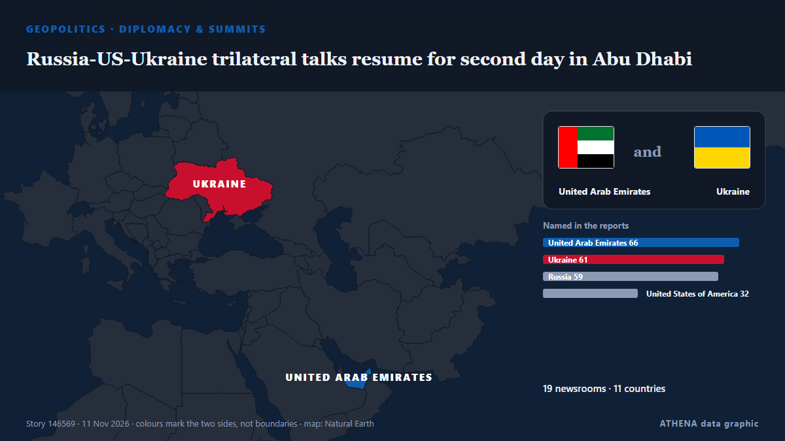

Diplomacy & summits
SponsoredPresented by  Cybernetics and Artificial Intelligence Lab Welcome to the Cybernetics and Artificial Intelligence Laboratory, established at the Department of Business Administration of the National and Kapodistrian University of Athens. The lab is headed by Professor Dimitrios Thomakos. The lab aims to do research that can be published in top venues. Our research uses tools and methods of Artificial Intelligence, and lies in the following areas: - Forecasting - Decision making - Cyber security - Finance We are always looking forward to collaborating with exceptional students!
Cybernetics and Artificial Intelligence Lab Welcome to the Cybernetics and Artificial Intelligence Laboratory, established at the Department of Business Administration of the National and Kapodistrian University of Athens. The lab is headed by Professor Dimitrios Thomakos. The lab aims to do research that can be published in top venues. Our research uses tools and methods of Artificial Intelligence, and lies in the following areas: - Forecasting - Decision making - Cyber security - Finance We are always looking forward to collaborating with exceptional students!
| 30 Oct | 0 |
|---|---|
| 31 Oct | 0 |
| 1 Nov | 0 |
| 2 Nov | 0 |
| 3 Nov | 0 |
| 4 Nov | 0 |
| 5 Nov | 0 |
| 6 Nov | 3 |
| 7 Nov | 1 |
| 8 Nov | 4 |
| 9 Nov | 5 |
| 10 Nov | 6 |
| 11 Nov | 3 |
| 12 Nov | 1 |

Russia-US-Ukraine trilateral talks resume for second day in Abu Dhabi
Rustem Umierov said Ukraine's team is en route to Abu Dhabi for trilateral talks on 10-11 November, with European and NATO representatives also attending. from Ukrainska Pravda (English)
Ukraine and Russia agree to large-scale prisoner exchange after second day of talks
Thousands of Ukrainians are held in Russian captivity. from The Independent
Russian ambassador to US Alexander Darchiev dies suddenly at 66
The announcement called Darchiev ‘an outstanding diplomat, an experienced leader, a kind friend, and a mentor’ from The Independent
White House Confronts Democrats over Planned Probes, Claiming Possible ‘Criminality’
Rep. Robert Garcia, the likely head of the House Oversight Committee, stressed that Congress’ investigative powers do not need the “permission of the White House.” from Courthouse News
Kennedy Family Sues To Block Trump’s 250-Foot Arch—Says It Would Cast Shadow On JFK’s Grave
Nine members of the Kennedy family are seeking to join a lawsuit to block the construction of President Donald Trump’s planned triumphal arch in Washington, D.C. from Forbes Business
Russian negotiator rejects territorial swaps with Ukraine as Abu Dhabi talks end
Vladimir Medinsky — presidential aide and longtime chairman of the Russian Military Historical Society (RVIO) — once again led the Russian delegation at trilateral talks in Abu Dhabi. from Meduza (English)
Rubio hails 'very productive' Russia-Ukraine talks in Abu Dhabi
Rubio says Russia-Ukraine Abu Dhabi talks 'very productive' from Khaleej Times (working feed)
Rubio sees 'no need' to resume major strikes against Iran at G7
European members of the G7 had pressed Rubio at the meeting of foreign ministers of the group in Paris to avoid any new escalation against Iran. from The New Arab
Russia and Ukraine hold nearly 4 hours of U.S.-mediated talks in Abu Dhabi
The official said it was possible the envoys would travel to Russia at some point after the talks in order to meet with Putin. from TASS (English)
US calls for new Europe security framework as Russia, Ukraine hold first peace talks in 9 months
A first day of US-led talks between Ukraine and Russia in Abu Dhabi ended on Tuesday, with Washington calling for a “new” security framework, as Europe fears US President Donald Trump plans a deal… from Dawn
Hardline Trump aide Stephen Miller takes over as White House chief of staff
The architect of the Trump administration’s brutal crackdowns on immigration and dissent was already known as “the prime minister.” Now he’ll work as the chief of staff. from Wired
Russia and Ukraine hold first peace talks for nine months, gaps have narrowed
ABU DHABI: Russian and Ukrainian officials met in Abu Dhabi on Tuesday for their first US-brokered talks since February, after President Donald Trump suggested last week that a broad deal was… from New Straits Times
G7 allies to assess impact of Trump's midterm setback at Paris talks
By John Irish PARIS, Nov 9 (Reuters) - A G7 foreign ministers gathering in Paris on Monday will provide the first opportunity for Washington's allies to gauge whether a US midterm defeat for… from Al-Monitor
UFC chief Dana White declines Trump’s ‘jovial’ White House job offer
President Trump said he offered the job of White House press secretary to Dana White, president and CEO of the Ultimate Fighting Championship (UFC). from The Hill
Trump: Iran war effectively over
Shafaq News- Washington (Updated at 1:30 a.m.) The war with Iran is effectively over from a military standpoint, US President Donald Trump said on Monday after meeting Qatari Prime Minister Sheikh… from Shafaq News (English)
Trump thinks he will meet Xi and Putin at China APEC summit
Trump said he will travel to China for the APEC summit, set for Nov 18 to Nov 19. from The Straits Times
Trump says he is highly unlikely to order Iran strikes if talks progress
WASHINGTON/CAIRO, Nov 8 (Reuters) - US PresidentDonald Trump on Sunday said he was highly unlikely to order fresh attacks on Iran as long as talks to end the conflict progress, even as both countries… from Al-Monitor
G7 ministers press Rubio on Iran, Ukraine at Paris talks
Trump stoked fears of a U.S. pivot toward the Kremlin by predicting a "very big" deal with Russia involving not only Ukraine but "all of Europe." from Courthouse News